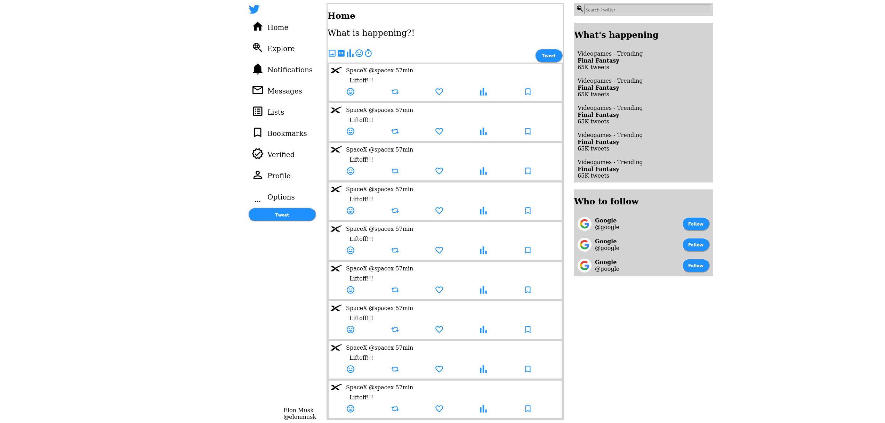

 This is a (visual, not functional) clone of the Twitter web app. I've made for CSS practice, mainly for flexbox. I've also used Material UI icons and Vue.js to save me from copy pasting components.